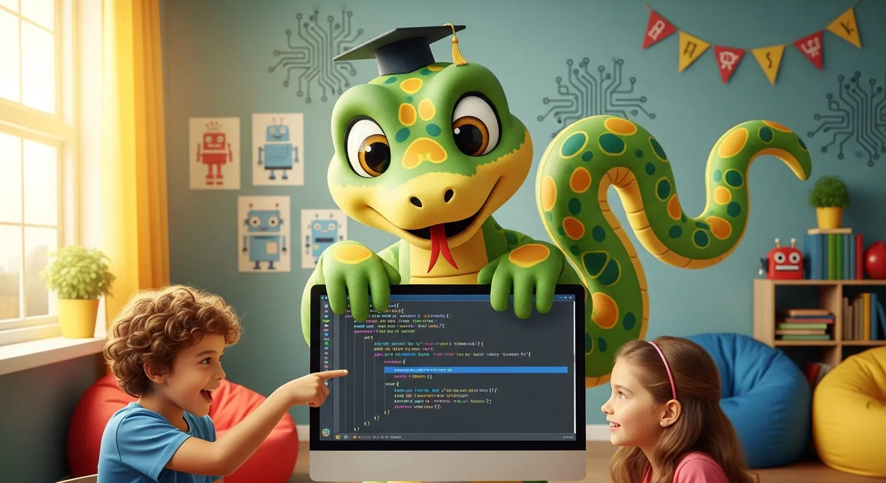

🐍 פייתון לילדים
מדריך מלא ללימוד Python מגיל 10
📅 פברואר 2026 • ⏱️ 12 דקות קריאה • עודכן מרץ 2026

פייתון (Python) היא השפה מספר 1 בעולם לפי מדד TIOBE — ולא במקרה. היא משמשת ב-Google, Netflix, Instagram, NASA ו-OpenAI (החברה שבנתה את ChatGPT). והחדשות הטובות? פייתון גם אחת השפות הכי קלות ללמידה — מה שהופך אותה למושלמת ללימוד תכנות לילדים.
בדרך ההייטק אנחנו מלמדים פייתון לילדים ונוער כבר שש שנים. במדריך הזה נסביר למה פייתון מתאימה לילדים, מאיזה גיל להתחיל, מה אפשר לבנות איתה, ואיך מתחילים.
מה זה פייתון?
פייתון היא שפת תכנות כללית שנוצרה ב-1991 על ידי Guido van Rossum. היא תוכננה מהיום הראשון להיות קלה לקריאה ולכתיבה — הקוד נראה כמעט כמו אנגלית פשוטה. בניגוד לשפות כמו Java או C++ שדורשות הרבה "קוד סביב הקוד", בפייתון הכל נקי וברור.
השם "Python" נקרא על שם הקבוצה הקומית מונטי פייתון — ולא על שם הנחש. 🐍
למה פייתון השפה הכי פופולרית בעולם?
print("שלום עולם!")
# לעומת זאת, ב-Java אותו דבר נראה ככה:
# public class Main {
# public static void main(String[] args) {
# System.out.println("שלום עולם!");
# }
# }
רואים את ההבדל? שורה אחת בפייתון מול שבע שורות ב-Java. זו בדיוק הסיבה שפייתון מושלמת לילדים — פחות "רעש", יותר יצירה.
מי משתמש בפייתון?
כן, גם ChatGPT ורוב כלי הבינה המלאכותית נבנו עם פייתון. אם הילד שלכם מתעניין בבינה מלאכותית — פייתון היא הדרך.
מאיזה גיל ללמוד פייתון?
| גיל | מה מתאים | למה |
|---|---|---|
| 7-9 | סקראץ' | בלוקים ויזואליים, בלי הקלדה |
| 8-11 | מיינקראפט | JavaScript דרך עולם שהילד אוהב |
| 10-12 ⭐ | פייתון בסיסי | הגיל המושלם להתחלה! |
| 12-14 | פייתון + Pygame | פיתוח משחקים ופרויקטים |
| 14+ | פייתון + AI | בינה מלאכותית, ניתוח נתונים |
💡 איך יודעים שהילד מוכן לפייתון?
הילד צריך לדעת להקליד באנגלית בצורה סבירה (לא מהירה — רק מכיר את האותיות). אם הילד צעיר מ-10 או לא מכיר אותיות באנגלית, עדיף להתחיל עם סקראץ' ולעבור לפייתון אחרי חצי שנה. קראו עוד על הגיל הנכון לתכנות →
מה אפשר לבנות עם פייתון?
🎮 משחקים עם Pygame
Pygame היא ספרייה שמאפשרת ליצור משחקי 2D אמיתיים — עם גרפיקה, צלילים, ושחקנים. ילדים בונים משחקים כמו Snake, Flappy Bird, ומשחקי ירי.
🤖 בינה מלאכותית
פייתון היא שפת ה-AI. עם ספריות כמו TensorFlow ו-OpenAI API, ילדים יכולים לבנות פרויקטי AI — צ'אטבוטים, זיהוי תמונות, ומערכות המלצה.
🌐 אתרים ואפליקציות
עם Flask או Django, אפשר לבנות אתרים מלאים. הרבה מהאתרים הגדולים בעולם (Instagram, Pinterest) בנויים על Django.
📊 מדע נתונים וגרפים
ילדים שמתעניינים במדע יכולים לנתח נתונים, ליצור גרפים, ולעשות ניסויים סטטיסטיים — עם ספריות כמו Pandas ו-Matplotlib.
🔧 אוטומציה
פייתון מעולה לאוטומציה — תוכנות קטנות שעושות דברים אוטומטית. למשל: שינוי שמות קבצים, שליחת הודעות, או סידור תמונות.
דוגמאות קוד — פרויקטים ראשונים
דוגמה 1: משחק ניחוש מספרים
number = random.randint(1, 100)
guess = 0
print("🎯 אני חושב על מספר בין 1 ל-100!")
while guess != number:
guess = int(input("מה הניחוש שלך? "))
if guess < number:
print("⬆️ גבוה יותר!")
elif guess > number:
print("⬇️ נמוך יותר!")
print("🎉 כל הכבוד! ניחשת נכון!")
15 שורות קוד ויש לנו משחק עובד! ילדים אוהבים לראות תוצאות מהר, ופייתון נותנת את זה.
דוגמה 2: מחשבון ציונים
grades = [85, 92, 78, 95, 88]
average = sum(grades) / len(grades)
print(f"הממוצע שלך: {average}")
if average >= 90:
print("🌟 מצוין!")
elif average >= 80:
print("👍 טוב מאוד!")
else:
print("💪 ממשיכים להשתפר!")
דוגמה 3: ציור עם Turtle
# ציור ריבוע צבעוני
t = turtle.Turtle()
colors = ["red", "blue", "green", "yellow"]
for i in range(4):
t.color(colors[i])
t.forward(100)
t.right(90)
Turtle היא ספרייה מובנית בפייתון שמאפשרת לצייר על המסך. מושלמת ללמוד לולאות ומשתנים בצורה ויזואלית!
מסלול הלמידה — מאפס עד פרויקט
📅 ציר זמן ללימוד פייתון לילדים
חודש 1-2: הבסיס
print, משתנים, תנאים (if/else), לולאות (for/while), רשימות. פרויקט: משחק ניחוש מספרים.
חודש 3-4: פונקציות ומבנים
פונקציות, מילונים, עבודה עם קבצים, Turtle Graphics. פרויקט: יומן אישי או מחשבון מתקדם.
חודש 5-6: פרויקטים מעשיים
Pygame למשחקים, או Flask לאתרים. פרויקט: משחק 2D שלם או אתר אישי.
חודש 7+: התמחות
AI עם OpenAI API, ניתוח נתונים, או בוטים לדיסקורד. פרויקט: צ'אטבוט או כלי AI.
פייתון מול שפות אחרות — מה עדיף לילדים?
| 🐍 פייתון | JavaScript | סקראץ' | Lua | |
|---|---|---|---|---|
| גיל התחלה | 10+ | 10+ | 7+ | 10+ |
| קושי | ⭐⭐ | ⭐⭐⭐ | ⭐ | ⭐⭐ |
| הכי טוב ל... | AI, מדע, אוטומציה | אתרים, מיינקראפט | התחלה ראשונה | משחקי רובלוקס |
| ביקוש בתעשייה | 🔥🔥🔥 | 🔥🔥🔥 | ללמידה בלבד | 🔥 |
השורה התחתונה: אם הילד מתעניין ב-AI, מדע, או רוצה ללמוד שפה "אמיתית" מהיום הראשון — פייתון היא הבחירה הטובה ביותר. אם הילד צעיר (7-9) — סקראץ' קודם. אם אוהב משחקים — מיינקראפט או רובלוקס.
קורסי פייתון לילדים בדרך ההייטק
אנחנו מציעים כמה מסלולים ללימוד פייתון:
- קורס פייתון דיגיטלי (גיל 12+) — לימוד עצמי עם מדריך וידאו, תרגילים אינטראקטיביים, ופרויקטים מעשיים. גישה לנצח!
- שיעורים פרטיים בפייתון (גיל 10+) — מדריך אישי 1-על-1 שמתאים את קצב הלמידה לילד. מתחילים מאפס.
- פיתוח משחקים בפייתון (גיל 12+) — קורס ממוקד Pygame. הילד בונה 5+ משחקים מאפס.
כל הקורסים כוללים תמיכה מקצועית בוואטסאפ + תעודת סיום. צפו בחבילות ומחירים →
איך מתחילים — מדריך מעשי
צעד 1: התקנת פייתון (חינם!)
פייתון חינמית לגמרי. נכנסים ל-python.org, מורידים, מתקינים — תוך 5 דקות מוכנים.
צעד 2: בחירת עורך קוד
- Thonny — עורך שתוכנן במיוחד ללמידה. מושלם להתחלה.
- VS Code — עורך מקצועי (חינמי). מתאים למי שרוצה כלי רציני.
- Replit — אפשר לכתוב קוד בדפדפן בלי להתקין כלום.
צעד 3: הפרויקט הראשון
התחילו עם "שלום עולם" ומשם תמשיכו למחשבון, למשחק ניחוש, ולמשחק 2D עם Pygame. קורס מובנה יחסוך לכם הרבה ניסוי וטעייה ויתן מסלול ברור.
🐍 התחילו ללמוד פייתון היום!
קורסים דיגיטליים מ-497₪ | שיעורים פרטיים מ-156₪ לשיעור
מגיל 10 • ללא ניסיון קודם • גישה לנצח
📋 צפו בפרטי הקורס
שאלות נפוצות על לימוד פייתון לילדים
מאיזה גיל אפשר ללמוד פייתון?
מגיל 10-11 אפשר להתחיל עם פייתון בסיסי. מגיל 12+ אפשר להתקדם לפרויקטים מורכבים כמו פיתוח משחקים ו-AI. ילדים צעירים יותר? סקראץ' מגיל 7.
כמה זמן לוקח ללמוד פייתון?
את הבסיס אפשר ללמוד ב-2-3 חודשים (30 דקות ביום). אחרי חצי שנה ילדים בונים פרויקטים עצמאיים. שנה ומעלה — רמת ביניים עם AI ומשחקים.
כמה עולה קורס פייתון לילדים?
בדרך ההייטק קורס פייתון דיגיטלי עולה מ-497₪ עם גישה לנצח. שיעורים פרטיים מ-156₪ לשיעור. לכל החבילות →
האם פייתון רלוונטית לעתיד?
פייתון היא השפה מספר 1 בעולם לפי TIOBE Index. היא שולטת בתחומי AI, Data Science, אוטומציה ו-DevOps. הביקוש למפתחי פייתון רק עולה — וב-2026 זה עוד יותר נכון עם הפיצוץ של הבינה המלאכותית.
צריך ניסיון קודם בתכנות?
לא! הקורסים שלנו מתחילים מאפס. אם הילד כבר עבר סקראץ' — מעולה, ההתקדמות תהיה מהירה יותר. אבל זה לא הכרחי.
פייתון או JavaScript — מה עדיף?
פייתון קלה יותר ומתאימה למי שמתעניין ב-AI ומדע. JavaScript מתאימה למי שרוצה לבנות אתרים או לתכנת מיינקראפט. שתיהן בחירות מצוינות.
הילד רק בן 8 — מה לעשות?
מגיל 8 מומלץ להתחיל עם סקראץ' (תכנות ויזואלי) או מיינקראפט. אחרי חצי שנה עד שנה, הילד יהיה מוכן לפייתון.
📚 קריאה נוספת:
למה ללמד ילדים תכנות? ·
באיזה גיל להתחיל? ·
פיתוח משחקים לילדים ·
בינה מלאכותית לילדים ·
איך ללמד ילד תכנות? ·
יזמות לילדים בעידן AI ·
קורס פייתון — דף הקורס